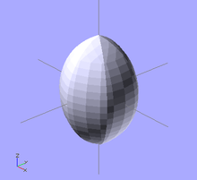
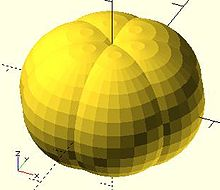
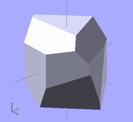

Iterate over the values in a range or vector and create the intersection of objects created by each pass.
Besides creating separate instances for each pass, the standard for() also groups all these instances creating an implicit union. intersection_for() is a work around because the implicit union prevents getting the expected results using a combination of the standard for() and intersection() statements.
intersection_for() uses the same parameters, and works the same as a For Loop, other than eliminating the implicit union.
example 1 - loop over a range: |
||
intersection_for(n = [1 : 6]) |
 |
 |
example 2 - rotation : |
||
intersection_for(i = [ [ 0, 0, 0], |
 |
|
In
Created with the Personal Edition of HelpNDoc: Free EPub and documentation generator